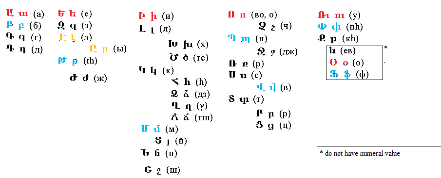

The matter you are about to witness
is alphabet. Instead of memorizing its meaningless sequence of
symbols, we can
see it is arranged in structure of vowels,
labials & linguals
and it can be also arranged according to axial structure
around vowels
explanations
are at page 3
For those who see in a different
spectre:
This
work supposes that reader knows basics on researched writing
systems. The
prominent differentiation of letter & it’s phonemes here’s
renounced &
speaking of a letter we are telling whole the range of sounds
it can represent.
1
Surprisingly the form of the
english alphabet that is taught to be its preveious formation:
ABCDEFGHIKLMNOPQRSTVXYZ is not that easy to find in the form
of an ancient artifact,
not academic table. So Diringer in his over 600 pages &
even more images of
“Alphabet” doesn’t show such a presentation. Actually the only
images of such
kind he gives are tagbanwa alphabet & runic alphabet.
There’s also an image of the more
wide spread futhark representation, but according to the “In
medieval sources,
notably the Poetic Edda, the Sigrdrífumál mentions "victory
runes" to be carved on a sword, "some on the grasp and some on
the
inlay, and name Tyr twice."” it happens to be sort of iroha.
2
So the smart step now is to compare
the runic alphabet with the structure.
The shifts of labials off its
column are common: no alphabet, where M would stand in it, is
found yet. The
possible reasons of such a situation are supposed in previous
versions of this
article, but I’d better avoid it now, for it goes off the
range of linguistics
& into occvlt, which is probably not welcome. Yet few
moments urge
explanations:
Arabic alphabet is in abjad order,
“consonant” alphabets are supposed to have vowels because they
use vowels for
its transliterations, so even having some consonant consound
they’re more vowel
then the others. و and ו are considered labials not vowels
because
they are labial & they follow ه and ה, where ה is often
transliterated with vowel & though ه is usually
transliterated as H
(see the similar trouble with greek H, few lines below. also
compare with
ugaritic h appointed a vowel, compare it’s graphic image with
the ʾi
followed by ʾu appointed labial just as ו was), also “вот что
говорит Сегаль В. С.: «Это —
3
выдох с участием голоса, как бы „придыхание“ перед
гласным звуком или после него. Никакого
уклада речевых органов для звука [h]
не требуется: он произносится расслабленно, без всякого
напряжения. Этот звук
не похож ни на обычное русское [г], ни на русское [х]»”. (here’s what sais Segal
V.S.: “It’s an exhale with voice, as an “aspiration” before
vowel or after it.
No mode of articulatory organs for the sound [h] is (there’s
double negation in russian) needed: it’s pronounced
relaxed, without any
tension. This sound doesn’t resemble neither russian [г] nor russian [x])
θ is considered to be labial
because it is in russian (not only by loan words like θεά (фея, a fairy) for example, but by its
mere phonetic (and numeric) value – which could witness of
such a reading in
the period of the alphabet’s adoption or in the previous
period, when those
words were loaned) or it rather can be explained by
th-fronting. (and the
th-fronting of θ could be the reason archaic F was removed
from the line.
Georgian თ [t] or [tʰ] with present
ვ [v] supports the latter,
so does hebrew)
η
is not considered vowel because of its position, but it
doesn’t prove it (being
tautologic) if we’re proving the structure in there with it,
so we need some other
arguments. And here they’re: its counterparts in other
alphabets, such as latin
h, arabic ح, hebrew ח (though it is
graphically and phonetically resembles ה, it always sounds as
h, but the
other point of view is in russian where it goes и[i:] which makes it ii actually, at least
that’s the way it
looks when it goes in claster of И(Ѝ)ІЇЙЈ. So probably greek
H is vowel
& then that’s the first what could put labial θ in that
position &
mythological connotations only followed. But that’s deeper
in fields of
reconstructions where I still don’t feel competent enough.
H
is not in the velar column probably because X was [h] & H
was [ʌʃ]
or [eitʃ] (eighth?). Which makes it II too, because it makes
it shin,
which is sin, which is S which is plural suffix in europe
along with russian И&
germanic N, which probably
comes after egyptian which probably is a form of .
And
it brings us to egyptology, where such an order is the most
wide spread now.
And it’s widely spread over souvenir stores:
And
sometimes even with Maat replaced (and W is with it – w is out
of that column
too, actually)
4
So
I was digging where does this tradition come from, and I found
Budge:
Brugsch
printed
in the first volume of his Wörterbuch (1867) he said – I guess
we
should regain this tradition of giving links not by numerals
(silent in
fragmented scans) – but as they used to do it in xix.
7
Herrn Vicomte E.
de Rouge (s. dessen Note sur
la transcription des hieroglyphes in der Zeitschrift für
ägyptische
Sprache und Alterthumskunde, 1866, S. 69 flgd.), he said
Surprisingly
enough
the order changes chronlogically from the one with replaced M
(but not
W) in de Rouge’s to M among labials in Brugsch’s &
Budge’s. And then the
tradition is found in meroitic:
and
though
one of the images is labeled as “hieroglyphic – demotic” it is
Meroitic.JPG
oh,
that’s meroitic having both hieroglyphic & demotic, right.
But let’s watch
egyptian hieroglyphic, hieratic
& demotic:
11
As you can see,
it wasn’t easy to get the
demotic alphabet, but here it is:
Phonetic
symbols
from Ancient Egypt. Tabled are equivalents fom Hieroglyphs,
Hieratic,
Demotic and English:
from: Dersin, D. (ed.).
(1997). What Life was Like on
the Banks of the Nile: Egypt 3050 - 30 BC, Time-Life
Books, Alexandria, US.
and
another
one from omniglot.com:
12
The
ugaritic
alphabet supports this structure in it’s both orders, though
where
does the left order come from is unclear:
13
Etruscan (the image above) is told
to come from phoenician (the image below) with four additional
“greek letters”.
And it only fits the axial symmetry if Y is considered
consonant.
This
is a modern artefact, but where I took it it’s been told “This
crafted
Phoenician Alphabet reproductions of Phoenician antiquities:
(12.6 x 12.6 cm)
In
this category, LebanonPostcard presents beautiful frames,
metallic phoenician
statuettes and wooden stands reproducing some Lebanese
souvenirs of the time of
the great Poenicians!
The
strong glass-covered wooden frames, contain crafted
reproductions of Phoenician
antiquities.
Each
frame comes with its metal hook ready to be hung up.
They
are thus one of the best souvenir gifts you can have from
Lebanon.
Price:
$25.00”
Reminding
me of the egyptian souvenirs & as I couldn’t find a more
academic artefact
with some help of the academic transliteration this supposed
copy of some
artefact I couldn’t find in a source, is considered to be
reliable enough.
The image to the right looks a
novice copy but it fits both structures with both it’s orders
with vowel V
& consonant H. (it contains two different alphabet’s
endings & it also
contains obvious mistakes (Фlooks like O on
the front side & Гlooks like A on
the back side of the pan). Was it a mistake of the one who
made the copy or was
it a riddle to test if a student competent enough to find
the misplaced rod
14
Armenian
alphabet doesn’t fit any of these two structures.
At the first
sight. But if we research it, we can find out there is some
classic armenian
alphabet in greek order with extra letters sticked inbetween
breaking the
structure:
The basis
for such a point of view can be the witness of Khorenatsi:
Врам повелел нашему
царю Врамшапуху спуститься в Месопотамию, навести там порядок
и рассудить
должностных лиц двух сторон. Тот отправился и привел все в
порядок, но испытал
немалые трудности из-за секретаря, так как с тех пор как
Месроп оставил царский
двор, там не было ни одного опытного писца, ибо применялось
персидское письмо.
По этому поводу царю представился некий священник по имени
Хабел и обещал
добыть для армянского языка письмена, приспособленные его
другом епископом
Даниелом. Царь не обратил на это внимания, но, прибыв в
Армению, застал всех
епископов собравшимися у Сахака Великого и Месропа в заботах
об изобретении
армянской письменности, о чем сообщили царю, а он передал им
слова монаха.
Услышав, они стали просить его заняться этим столь важным
делом. Поэтому он
послал в качестве вестника одного из почтенных мужей нашей
страны, близкого ему
человека из рода Хадуни, по имени Вахрич. Отправившись вместе,
они крепко
усвоили от Даниела начертанный в давние времена ряд букв,
расположенный в порядке греческого (алфавита) и вручили его по
возвращении Сахаку и
Месропу.
Об этом также говорит
ученик Месропа Маштоца Корюн:
Тогда царь рассказал
им о неком сирийце, благопристойном епископе по имени Даниэл,
внезапно нашедшем
письмена алфавита армянского языка. И когда царь рассказал об
этой находке, они
уговорили царя об их обретении. Тогда царь отправил некоего
Вагрича с царской
грамотой к некоему иерею Авелу, приближенному сирийского
епископа Даниэла.
Узнав об этой
просьбе, Авел немедля прибыл к Даниэлу и сперва сам он
осведомился у Даниэла об
этих письменах, а затем, взяв их у него, отправил царю
Врамшапуху в Армению. И
привез он (Вагрич письмена) ему в пятом году царствования его.
А царь, получив
от Абела письмена, вместе со святым Сааком и Маштоцем весьма
обрадовались.
Затем блаженные
радетели, взяв внезапно найденные (письмена), попросили еще у
царя отроков,
дабы иметь возможность применить (на деле) письмена. И когда
15
многие из них
усвоили, приказал (царь) повсюду обучать этими же
(письменами). Тем самым
блаженный (Маштоц) был удостоен прекрасного звания вардапета.
Около двух лет он
занимался преподаванием и вел (занятия) этими письменами.
Но когда выяснилось,
что эти письмена недостаточны, чтобы выразить (все)
силлабы-слоги армянского
языка, поскольку эти письмена были погребены под другими
письменами и (затем)
воскрешены, тогда они вновь стали хлопотать о том же и
некоторое время искали
выхода (из положения).
Под похороненными
письменами судя по всему подразумевают палимпсест.
So, if we compare
armenian to greek & remove those extra letters aside a
little, we can see
the previous structure with greek H represented with vowel Э, & θita being not labial
at all. It’s funny, considering the traditional idea that
russian was introduced
to kirillic script centuries later. Is it because
of some dialects’ differences or because the traditions of
anciently looking glagolica
with its’ original b/d symmetry go deeper than we think?

However the building of axial
structure for armenian alphabet is not possible till the set
of old armenian
alphabet is found. Yet it’s been found out that the previous
presentation is
somehow obsolete, & the most representations of armenian
alphabet don’t
have that “ев”-letter (which is just
a combination of “e” & “в” – at least that’s told
so where I’v taken the image I collaged the one above from.),
so the modern armenian
alphabet does arrange into axial symmetry somehow:
and
the set of letters with numeral values
wouldn’t
16
If
we try to arrange russian alphabet to these structures it
would be a trouble,
mostly because there’s no labial in second line other then Ёthe
only labiability of which is
that it’s a form of E sounding like [jo] and transliterated
in european
languages as eu (or eV) and it fits the axial structure only
if Йdoes
as well (and though Йis a
form of vowel И, it never makes a syllable, so it
is hardly a vowel) and it looks even less organized, more like
falling in line
only by 50% chance & ё-й variability in some lines, which
doesn’t make it 100% of chaotic probability, but it can be
considered the point
where structures are lost. But if we consider ё & й the
same with е & и - as in french, for example, then it's
found, but still weird, though just as linear it reminds ёлку
which can be related to sacred groves with their sacred trees.
Ъ& Ьmay
also be arranged with the rest
of the alphabet along the axis, for they are historically
& in other
dialects, as you can see on the bulgarian further on. And
the vowel row is not
just a recent tradition, it was present in the oldest
claimed to be found form
of it:
17
If you google for alphabet you
would not get it arranged to the lines as above. Actually the
most similar I
could get that way is the following one (and it wasn’t
coloured)
And
when I first tried aeiou I only managed to find these branches
And when the search was performed a
year later, in 2015, I found the form I was looking for:
An only image among tons of
irrelevant. Yet much more of boards like this can be found if
you search for
“alphabet board”.
18
That alphabet board (as shown in
breaking bad series, by the way) wasn’t found in any other
alphabetic system. Searching
for АЕИОУЪonly brought me
this:
It’s bulgarian, the language
russian writing system was actually invented for. And still
having the most of
russian alphabet’s fails (no labial in second row since it was
removed from
greek & θita first removed to the end of the alphabet only
to be lost
when its numeral value of 9 didn’t matter for digital system
wasn’t based on
alphabet anymore), it’s still much more structured than
russian:
The
most labial letter in the Ъ–line is Юfor it
sound like [ju] even though
it looks like {IO} – does it have anything to do with
russian Ёor not
is not clear.
In
axial structure Ьmay be considered
vowel only if Йis too, which
seems legit.
19
Search with these two words: aeiou
alphabet
brought me to
http://www.luckymojo.com/nagasiva.html
with its fascinating images:
Yet no academic paper on this topic
was found yet, which doesn’t mean it isn’t there of course.
20
And the further search brought me
to even more obscure fields, so now I want to tell you why M
stands out of the
column. The good thing’s I have more than one of them
versions. Not so good
thing’s none of these hipotheses have crystallized in
structurally certain
system yet. So most recent one is that the alphabet board used
to be used as a
grammatic table & M could be replaced with J because in
europe there’re two
pronouns to pronounce first person: Me (mij, mein, мне, mois,,,) & Je (я, I, ich, ik, io, ego,,,) – it was
supported by θ standing for the same purpose, though I still
don’t know
greek to say what does κ or ζ stand for. Another version was
about M
being removed from it’s place because it “gave birth” to L
& N – so it was
supposed to keep it in its claster (as ЕЁ, ИЙ, IJ, UVW, ЦЧ, ШЩ,
ЪЫЬ& so on) –
the explanation for greek would be the fact that it used to
have F after E (it
was used in numeral system & is believed to be standing
for sound [w],
though I haven’t checked those historic assumptions yet. So
θ would stay [tʰ]
& why have greek θ-words spread with f-sound would be
explained with tʰ-fronting.
The most out of this world explanation is that letters were
associated with
different deities & M standing out of it’s place shows a
patriarchal
takeover of feminine cultural heritage (and this Mother
(Minerva, Maat, Mara? Mut!)
to Jupiter shift is supported with Θεά (фея, θεία) to
Zeus). For the myth reflecting the alphabet’s creation tells
of five vowels of
the first alphabet & only two more letters: b & t ( & )
so whole the system was not only deviding the world to male
& female parts,
but also probably was invented for music (for that’s the field
where the way it
sounds is important – in literature it only makes it easier to
use, but homonymy
makes it way less reliable (and a person from another state
wouldn’t probably
read it as japanese people could read chinese texts – and some
of them still
can)
And
in that myth, the way it was given by Robert Graves (it can
also be found in
Hyginus list, though Graves definitely used another source) –
the honour of
creation of the alphabet was given to three Fates over
phoronida Io.
21
And
alphabet was used in musical notation
(well, some of it still is)
And this
tradition
is out there in many forms:
M is for
mille
& it is a synonym for Ī
22
The nature of this image isn’t clear, but its
syllabarian part shows the structure of both single lines
& the alphabet
itself (though in the field of iberic writings they use to put
k-column in both
front & back of Bs & Ts as well, which correlates the
behaviour of K in
alphabetic structure, but it feels more natural to keep it in
the center, not
only because it’s column definitely stands along in latin
alphabet, but also
because it’s in the centre of the A to V (which sometimes is
considered to be
archaic latin without greek line) – and if we remove J & K
the centeral
letter would be L, but in academic literature (ISBN
5-02-011147-3 p.76) it’s
been told of M as of central letter.
23
Which writing systems don’t follow
these structures? Somewhere around India from Persian Empire
to Japan does K
tend to follow vowels, is it another reason for M to stand out
of its “I am”
position? What does макулатура
(maculature) really mean? So
tagbanwa’s actually abugida (top
right)
The
table in the right bottom corner is of Brahmi script – brahmic
scripts is a
real big family of writing systems & its order seem to
influence writing
systems from avestan to polynesian & beyond.
Sanskritologists seem to like
its order even more than egyptologists like the abcd sequence
stretched to
whole the set
Then there of course other writing
systems: Ge'ez script, though also being an abugida, has order
different from
brahmics. Also there’s canadian syllabics and probably more
orders are out
there. And if chinese or mayan have any similarity to
abecedaria that I haven’t
examined thoroughly yet. Well, let’s start doing it right now.
Searching for chinese
phonetic alphabet we can get this:
24
25
Then
there’re these:
Mayan
tradition is lost but the european researchers usually arrange
it’s sillabary
in alphabetic order:
This
is de landa alphabet, wrong in many ways, but chronoloically
first to
transcribe mayan.
And
on the next page is the modern comprehension of it.